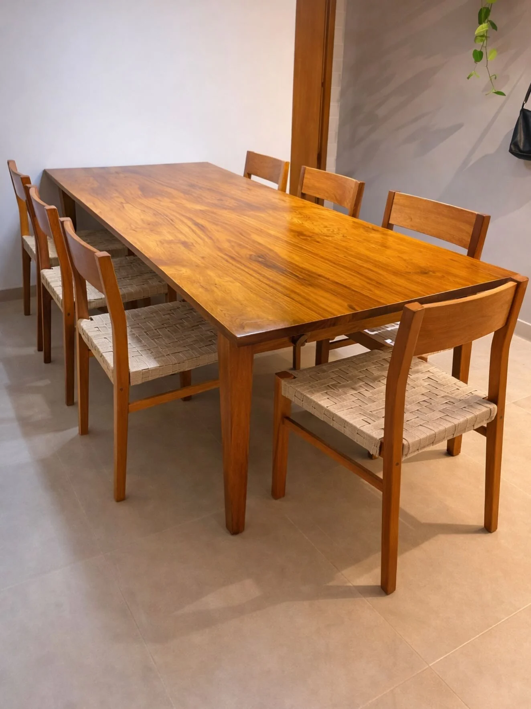
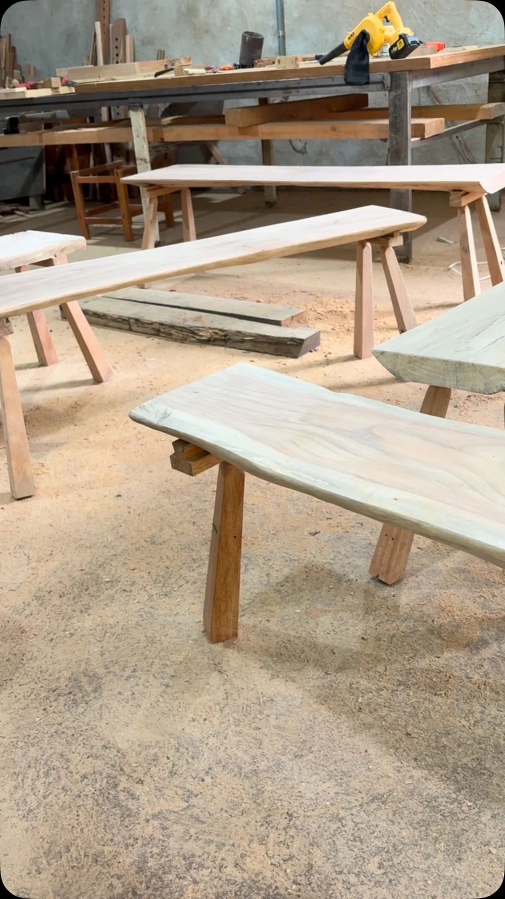
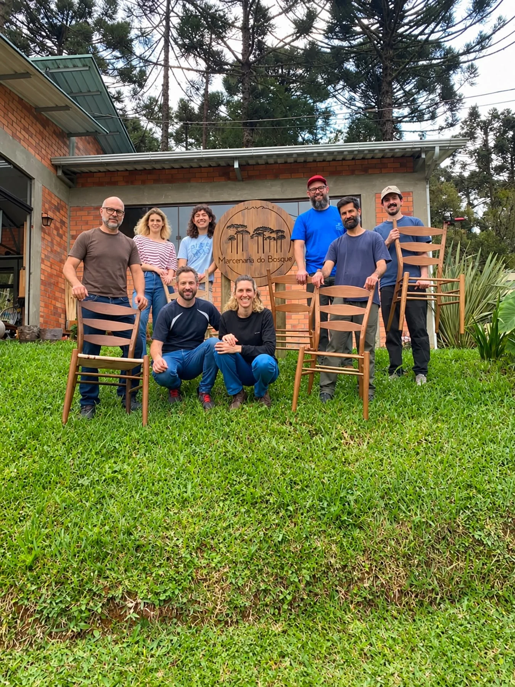

Mesa Delza e Caio.
Jequitibá-rosa e espigas aparentes
Marcenaria artesanal em Goiânia

É no detalhe que a madeira encontra o seu lugar.
Mesas, bancos e móveis que nascem de uma conversa entre a matéria e o espaço.
Jequitibá-rosa e espigas aparentes
Cama Luzia · Jequitibá-rosa
Formas feitas no torno de madeira
Revitalização de cor e acabamento
Madeira maciça e pés metálicos
Bordas resinadas e detalhes em Ipê
Freijó ebanizado; tampo de jatobá, peroba-rosa e copaíba
Mesa em cumaru; cadeiras com assentos em muiracatiara
Peças e processos do acervo da Murici. Mais trabalhos no Instagram ↗
O ofício

Espigas aparentes, encaixes rabo de andorinha, acabamento à óleo e veios que continuam visíveis. Os registros da Murici mostram escolhas concretas de desenho e construção para conversar sobre o seu projeto.
Entrar na oficina pelo Instagram ↗
Registro de um curso de construção de cadeiras na Marcenaria do Bosque, compartilhado pela Murici. Formação e troca também fazem parte do trabalho.
Conhecer a Murici no InstagramUma ideia, um espaço, uma boa conversa.
Conte a sua ideia, envie uma referência ou as medidas do ambiente. A partir daí, a equipe conversa com você sobre desenho, madeira e possibilidades.
(62) 99956-7830